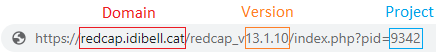
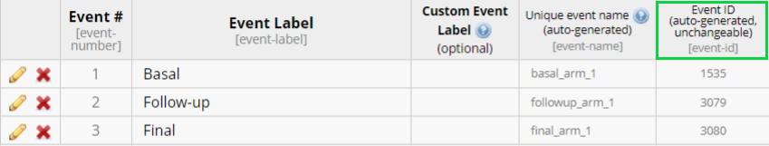

Introduction
The REDCapDM package provides a comprehensive toolkit for managing data exported from REDCap. It supports both importing REDCap data (from files or via API), transforming and cleaning the data according to the project’s dictionary and logic, and generating query reports for data validation. In particular, REDCapDM can identify missing or out-of-range values and track changes in identified queries across data versions.
Functions
All main functions are listed below (and described in detail in the examples):
Import data
-
redcap_data(): Read REDCap data into R.
Process data
rd_dates(): Standardize date and datetime fields.rd_delete_vars(): Remove specified variables (by name or pattern).rd_recalculate(): Recompute calculated fields and compare with REDCap values.rd_factor(): Replace numeric multiple-choice columns with their factor version.rd_checkbox(): Expand checkbox responses with custom labels and renamevar___1columns (REDCap style) tovar_option.rd_split(): Split dataset by form or event.rd_insert_na(): Manually set specified variables to missing based on a logical filter.rd_rlogic(): Translate REDCap branching or calculation logic into R syntax.rd_dictionary(): Update dictionary (translation of REDCap logic into R syntax) to reflect transformed data and logic.
Or we can use all these functions at once:
-
rd_transform(): One-step pipeline to clean and preprocess the raw REDCap data.
Queries
rd_query(): Apply expressions to identify data queries/issues.rd_event(): Report missing/incomplete events per record (longitudinal).check_queries(): Compare two query reports to track changes made.rd_export: Export query/report tables to an Excel (.xlsx) file.
Installation
The release version can be installed from CRAN:
install.packages("REDCapDM")The development version can be installed from GitHub:
install.packages("remotes") # Run this line if the 'remotes' package isn't installed already.
remotes::install_github("bruigtp/REDCapDM")Built-in dataset
For the following examples, we will use a random sample of the COVICAN study which is included in the package. COVICAN is an international, multicentre cohort study of cancer patients with COVID-19 to describe the epidemiology, risk factors, and clinical outcomes of co-infections and superinfections in onco-hematological patients with COVID-19.
We can load the built-in dataset by typing:
The structure of this dataset is:
List of 3
$ data :'data.frame': 342 obs. of 56 variables:
$ dictionary:'data.frame': 21 obs. of 18 variables:
$ event_form:'data.frame': 9 obs. of 3 variables:The first element in the list is a data frame containing all the data. The second element is a data frame with the information in the dictionary of the project about each field. The third and final element is a data frame containing the correspondence of each event with each form.
Some of the variables in the dataset are:
| Name | Description | Categories |
|---|---|---|
| record_id | Identifier of each record | |
| redcap_event_name | Auto-generated name of the events | |
| redcap_data_access_group | Auto-generated name of each center | |
| inc_1 | Patients older than 18 years | No ; Yes |
| inc_2 | Cancer patients | No ; Yes |
| inc_3 | Diagnosed of COVID-19 | No ; Yes |
| exc_1 | Solid tumour remission >1 year | No ; Yes |
| screening_fail_crit | Indicator of non-compliance with inclusion and exclusion criteria | Compliance ; Non-compliance |
| d_birth | Date of birth (y-m-d) | |
| d_admission | Date of first visit (y-m-d) | |
| age | Age | |
| dm | Indicator of diabetes | No ; Yes |
| type_dm | Type of diabetes | No complications ; End-organ diabetes-related disease |
| copd | Indicator of chronic pulmonary disease | No ; Yes |
| fio2 | Fraction of inspired oxygen (%) | |
| available_analytics | Indicator of blood test available | No ; Yes |
| potassium | Potassium (mmol/L) | |
| resp_rate | Respiratory rate (bpm) | |
| leuk_lymph | Indicator of leukemia or lymphoma | No ; Yes |
| acute_leuk | Indicator of acute leukemia | No ; Yes |
Usage
The package structure can be divided into three main components:
reading raw data, processing data and identifying queries. Typically,
after collecting data in REDCap, we will have to follow these three
components in order to have a final validated dataset for analysis. We
will provide a complete basic user guide on how to perform each one of
these steps using the package’s functions. For the processing of the
data and query identification, we will use the covican
built-in dataset as an example.
Read data
redcap_data
The redcap_data() function allows users to easily import
data from a REDCap project into R.
In order to read exported data from REDCap, we first need to download
the data and dictionary from the REDCap project in R format. We can then
use the arguments data_path and dic_path to
designate the local path where we have stored the R file and the
dictionary from the REDCap project:
dataset <- redcap_data(data_path = "C:/Users/username/example.r",
dic_path = "C:/Users/username/example_dictionary.csv")Note: The R and data CSV file exported from REDCap must be located in the same directory.
If the REDCap project is longitudinal (contains more than one event)
then a third element should be specified with the correspondence of each
event with each form of the project. This csv file can be downloaded in
the REDCap of the project following these steps: Project Setup
< Designate Instruments for My Events < Download
instrument-event mappings (CSV). Then, it has to be specified using
the argument event_path:
dataset <- redcap_data(data_path = "C:/Users/username/example.r",
dic_path = "C:/Users/username/example_dictionary.csv",
event_path = "C:/Users/username/events.csv")Note: if the project is longitudinal and the event-form file is not provided using the
event_pathargument, some steps of the processment can not be performed.
Another way to read data exported from a REDCap project is using an
API connection. To do this, we can use the arguments uri
and token which respectively refer to the uniform resource
identifier of the REDCap project and the user-specific string that
serves as the password:
dataset_api <- redcap_data(uri = "https://redcap.idibell.cat/api/",
token = "55E5C3D1E83213ADA2182A4BFDEA")In this case, there is no need to specify the event-form file since the function will download it automatically using the API connection, if the project is longitudinal.
Warning: Please keep in mind that the API token gives you special access to the REDCap project and that it should not be shared with other people.
The redcap_data() function returns a list with three
elements: imported data, dictionary and event-form mapping(if
included).
Process
Given any data imported from REDCap with redcap_data(),
this would be the pipeline of an entire processing workflow:
data |>
rd_delete_vars(delete_pattern = c("_complete", "_timestamp") |>
rd_dates() |>
rd_recalculate() |>
rd_checkbox() |>
rd_factor() |>
rd_dictionary() |>
rd_split(by = "event") # use "form" if not longitudinalAll functions are optional and should only be used at the user’s
discretion when necessary. The order of some functions can also be
exchanged. For example, for covican there are no variables
to delete and dates are already processed, so the pipeline would be
simplified:
covican_transformed <- covican |>
rd_recalculate() |>
rd_checkbox() |>
rd_factor() |>
rd_dictionary() |>
rd_split(by = "event")
covican_transformed$results
#> 1. Recalculating calculated fields and saving them as '[field_name]_recalc'. (rd_recalculate)
#>
#>
#> | Total calculated fields | Non-transcribed fields | Recalculated different fields |
#> |:-----------------------:|:----------------------:|:-----------------------------:|
#> | 2 | 0 (0%) | 1 (50%) |
#>
#>
#> | field_name | Transcribed? | Is equal? |
#> |:-------------------:|:------------:|:---------:|
#> | age | Yes | FALSE |
#> | screening_fail_crit | Yes | TRUE |
#>
#> 2. Transforming checkboxes: changing their values to No/Yes and changing their names to the names of its options. For checkboxes that have a branching logic, when the logic is missing their values will be set to missing. (rd_checkbox)
#>
#> Table: Checkbox variables advisable to be reviewed
#>
#> | Variables without any branching logic |
#> |:-------------------------------------:|
#> | type_underlying_disease |
#>
#> 3. Replacing original variables for their factor version. (rd_factor)
#>
#> 4. Converting every branching logic in the dictionary into R logic. (rd_dictionary)
#>
#> 5. Final arrangment of the data by event. (rd_split)All the functions that can be used in each step of a processing workflow are detailed below:
rd_delete_vars
This function removes unwanted variables from both a REDCap dataset
and its dictionary. This is especially useful for eliminating
automatically generated fields such as form completion flags
(*_complete) or timestamps (*_timestamp).
You can delete variables either by specifying their exact names or by using regular expression patterns:
# Option A: delete by variable name
covican_deleted <- covican |>
rd_delete_vars(vars = c("potassium", "leuk_lymph"))
# Option B: delete by regex pattern
covican_deleted <- covican |>
rd_delete_vars(pattern = c("_complete$", "_timestamp$"))When variables are deleted:
They are removed from both the dataset and dictionary.
Factor versions of deleted variables (if present) are also removed.
rd_dates
This function is designed to process and standardize
date and datetime fields in a REDCap dataset.
In REDCap projects, date and datetime fields can sometimes be stored as
character strings, which can make analyses difficult. This function
detects which fields should be dates/datetimes from the REDCap
dictionary and converts them to Date and
POSIXct, respectively.
covican_dates <- covican |>
rd_dates()Quick verification example:
# Simulate a character date since covican already has the dates in the correct format
covican_dates <- covican
covican_dates$data <- covican_dates$data |>
dplyr::mutate(d_birth = as.character(d_birth))
# Check class before conversion
class(covican_dates$data$d_birth)
#> [1] "character"
# Check class after conversion
covican_dates <- covican_dates |>
rd_dates()
class(covican_dates$data$d_birth)
#> [1] "Date"After this transformation, all date and
datetime variables are standardized and ready for analysis
in R.
rd_recalculate
This function identifies calculated fields in a REDCap project, translates their calculation logic into R, recalculates the values, and compares the results with the values stored in REDCap.
It then produces a structured report that helps users detect discrepancies between REDCap’s stored calculations and the values recalculated in R.
covican_recalc <- covican |>
rd_recalculate()
# Print recalculation results
covican_recalc$results## Recalculating calculated fields and saving them as '[field_name]_recalc'. (rd_recalculate)
##
##
## | Total calculated fields | Non-transcribed fields | Recalculated different fields |
## |:-----------------------:|:----------------------:|:-----------------------------:|
## | 2 | 0 (0%) | 1 (50%) |
##
##
## | field_name | Transcribed? | Is equal? |
## |:-------------------:|:------------:|:---------:|
## | age | Yes | FALSE |
## | screening_fail_crit | Yes | TRUE |The results object includes:
A summary report outlining the total number of calculated fields, how many were successfully transcribed into R, and how many showed differences between the REDCap values and the recalculated ones.
A field-level report listing each calculated field, whether the logic was successfully converted to R, and whether the recalculated values match the originals.
You can also exclude specific fields from recalculation (e.g., complex multi-event calculations) to reduce computation time and avoid unnecessary warnings.
# Exclude specific variables from recalculation
covican_recalc <- covican |>
rd_recalculate(exclude = c("screening_fail_crit", "resp_rate"))
covican_recalc$results## Recalculating calculated fields and saving them as '[field_name]_recalc'. (rd_recalculate)
##
##
## | Total calculated fields | Non-transcribed fields | Recalculated different fields |
## |:-----------------------:|:----------------------:|:-----------------------------:|
## | 1 | 0 (0%) | 1 (100%) |
##
##
## | field_name | Transcribed? | Is equal? |
## |:----------:|:------------:|:---------:|
## | age | Yes | FALSE |After running this function:
A new variable with the suffix
_recalcis added to the dataset, placed immediately after the original variable and containing the recalculated values.The data dictionary is updated with a corresponding entry, where the original variable label is extended with
"(Recalculated)"to make these fields easy to identify.
rd_checkbox
This function cleans and restructures REDCap checkbox fields. It
converts the default "Unchecked/Checked" categories of
checkbox responses created by REDCap into user-specified labels (default
"No"/"Yes") and renames the varname___code
variables (original REDCap structure) to readable names based on the
text of the checkbox options. Additionally, it updates the dictionary to
match the new variable names. This includes choices, calculations, and
branching logic.
# Default transformation: "No"/"Yes" labels & renamed variables
cb <- covican |>
rd_checkbox()
str(cb$data$underlying_disease_hemato_acute_myeloid_leukemia)## num [1:342] 0 NA 0 NA 0 NA 0 NA 0 NA ...
## - attr(*, "label")= chr "Specify underlying disease (choice=Acute myeloid leukemia)"For example, consider the checkbox field of the type of underlying
disease present in the covican dataset. Originally, the
variables were named type_underlying_disease__0 and
type_underlying_disease__1, while the option labels were
‘Haematological cancer’ and ‘Solid tumour’. After running the function,
the variables are renamed to
type_underlying_disease_haematological_cancer and
type_underlying_disease_solid_tumour, reflecting the option
text in a readable format..
To preserve the original REDCap-style names (e.g.,
varname___1, varname___2) instead of renaming
variables based on option text:
# use the argument checkbox_names to choose the final format of the variable names
cb <- covican |>
rd_checkbox(checkbox_names = FALSE)
str(cb$data$underlying_disease_hemato___1)## num [1:342] 0 NA 0 NA 0 NA 0 NA 0 NA ...
## - attr(*, "label")= chr "Specify underlying disease (choice=Acute myeloid leukemia)"If a checkbox field has a branching logic, the function will not
modify any values. However, you can use the na_logic
argument, which accepts the following options:
"none"(default): do not setNAbased on branching logic during transform."missing": setNAonly where the branching logic evaluation isNA."eval": setNAwhere the branching logic evaluates toFALSE(i.e., logic not satisfied or missing).
cb <- covican |>
rd_checkbox(na_logic = "eval")By default, checkbox factors are labeled "No" and
"Yes", but you can specify alternative labels:
cb <- covican |>
rd_checkbox(checkbox_labels = c("Absent", "Present"))
str(cb$data$underlying_disease_hemato_acute_myeloid_leukemia)## num [1:342] 0 NA 0 NA 0 NA 0 NA 0 NA ...
## - attr(*, "label")= chr "Specify underlying disease (choice=Acute myeloid leukemia)"rd_factor
This function converts categorical variables in a REDCap dataset into
R factors by replacing each original variable (numeric version) with its
corresponding .factor version created by REDCap.
factored <- covican |>
rd_factor()
# Checking class of the variable
str(factored$data$available_analytics)## Factor w/ 2 levels "No","Yes": 2 2 2 2 2 1 2 NA 2 1 ...
## - attr(*, "label")= chr "Blood test available? (+/- 72h)"If you need to keep certain variables in their raw form, you can list
them in the exclude argument. This prevents those variables
from being replaced (including their .factor version) while
still allowing the rest of the dataset to be converted.
factored <- covican |>
rd_factor(exclude = c("available_analytics", "urine_culture"))
# Checking class of both versions of the variable
str(covican$data$available_analytics)## 'labelled' int [1:342] 1 1 1 1 1 0 1 NA 1 0 ...
## - attr(*, "label")= chr "Blood test available? (+/- 72h)"
str(covican$data$available_analytics.factor)## Factor w/ 2 levels "No","Yes": 2 2 2 2 2 1 2 NA 2 1 ...Note: the function automatically excludes these system variables from conversion:
redcap_event_name,redcap_repeat_instrument,redcap_data_access_group. These variables are retained as-is to avoid interfering with longitudinal event mappings or user access groups.
After conversion only the cleaned factor variables remain in the dataset, the original numeric version of those variables is dropped.
rd_dictionary
When working with REDCap exports, the data dictionary contains field
metadata, branching logic, and calculation rules written in REDCap
logic. The rd_dictionary() function refreshes branching
logic and calculations, translating them from REDCap logic into R logic,
and ensures the dictionary remains consistent with the cleaned
dataset.
# Update dictionary after cleaning
dict_result <- covican |>
rd_factor() |>
rd_checkbox() |>
rd_dictionary()## Warning: The checkboxes are already in factor form. To properly evaluate
## checkbox branching logic, please run `rd_dictionary()` first.When we transform the dictionary:
Updates branching logic expressions so they match factor labels rather than numeric codes.
Converts calculations and logic into R-friendly expressions.
Reports any fields where branching logic or calculations could not be converted.
rd_split
After preparing your dataset, you may want to work with only one form
or one event at a time. The rd_split() function separates
your dataset accordingly.
- By form
For non-longitudinal projects (or longitudinal projects with an
event_form mapping), you can split the dataset into smaller
datasets based on forms.
forms_data <- covican |>
rd_split(by = "form")
forms_data$data## # A tibble: 7 × 3
## form events df
## <chr> <list> <list>
## 1 inclusionexclusion_criteria <chr [1]> <df [190 × 14]>
## 2 demographics <chr [1]> <df [190 × 8]>
## 3 comorbidities <chr [1]> <df [190 × 15]>
## 4 cancer <chr [1]> <df [190 × 27]>
## 5 vital_signs <chr [2]> <df [342 × 7]>
## 6 laboratory_findings <chr [2]> <df [342 × 8]>
## 7 microbiological_studies <chr [1]> <df [190 × 7]>If repeated entries exist, you can reshape the data into wide format:
forms_data <- covican |>
rd_split(by = "form", wide = TRUE)Note: For longitudinal projects, the column events shows the number of events in each form.
- By event
For longitudinal projects, you can also split the data by event. The
function uses the event_form mapping to assign variables
correctly to each event:
events_data <- covican |>
rd_split(by = "event")
events_data$data## # A tibble: 2 × 2
## events df
## <chr> <list>
## 1 baseline_visit_arm_1 <df [190 × 56]>
## 2 follow_up_visit_da_arm_1 <df [152 × 10]>If you want to extract only one form or event, use the
which argument:
# Example by form
baseline_data <- covican |>
rd_split(by = "form", which = "demographics")
head(baseline_data$data)## record_id redcap_event_name redcap_data_access_group
## 1 100-6 baseline_visit_arm_1 hospital_11
## 2 100-13 baseline_visit_arm_1 hospital_11
## 3 100-16 baseline_visit_arm_1 hospital_11
## 4 100-31 baseline_visit_arm_1 hospital_11
## 5 100-34 baseline_visit_arm_1 hospital_11
## 6 100-36 baseline_visit_arm_1 hospital_11
## redcap_event_name.factor redcap_data_access_group.factor d_birth
## 1 Baseline visit Hospital 11 1963-10-05
## 2 Baseline visit Hospital 11 1959-10-04
## 3 Baseline visit Hospital 11 1951-04-08
## 4 Baseline visit Hospital 11 1944-08-08
## 5 Baseline visit Hospital 11 1954-12-02
## 6 Baseline visit Hospital 11 1952-05-08
## d_admission age
## 1 2020-04-12 56
## 2 2020-02-13 60
## 3 2020-03-08 68
## 4 2020-02-23 75
## 5 2020-06-15 65
## 6 2020-02-25 67rd_insert_na
This is an auxiliar/bonus function that can be used to set some
values of a variable(s) to missing if a certain logic is fulfilled. It
can be used, for example, to insert missings on those checkboxes that do
not have a branching logic, as mentioned earlier. For instance, we can
transform the checkboxes with the rd_checkbox() function
and then use this function to set the values of the checkbox
type_underlying_disease_haematological_cancer to missing when
the age is less than 65 years old:
cb <- covican |>
rd_checkbox()
#Before inserting missings
table(cb$data$type_underlying_disease_haematological_cancer)
0 1
103 87
#Run with this function
cb2 <- covican |>
rd_checkbox() |>
rd_insert_na(vars = "type_underlying_disease_haematological_cancer",
filter = "age < 65")
#After inserting missings
table(cb2$data$type_underlying_disease_haematological_cancer)
0 1
65 50 Note that both the variable to be transformed (
age) and the variable included in the filter (type_underlying_disease_haematological_cancer) are in the same event. If the variable to be transformed and the filter didn’t have any event in common then the transformation would give an error. Furthermore, if the variable to be transformed was in more events than the filter, only the rows of the events in common would be converted.
rd_rlogic
This is also an auxiliar/bonus function that transforms the REDCap
logic into logic that can be evaluated in R. It returns both the
transformed logic and the result of the evaluation of the logic in R.
This function is used internally in multiple functions, for example,
rd_dictionary().
This function only returns the transformed logic, so it has to be used outside the transform workflow.
Let’s see how it transforms the logic of one of the calculated fields in the built-in dataset:
logic_trans <- covican |>
rd_rlogic(logic = "if([exc_1]='1' or [inc_1]='0' or [inc_2]='0' or [inc_3]='0',1,0)",
var = "screening_fail_crit")
str(logic_trans)List of 2
$ rlogic: chr "ifelse(data$exc_1=='1' | data$inc_1=='0' | data$inc_2=='0' | data$inc_3=='0',1,0)"
$ eval : num [1:342] 0 NA 0 NA 0 NA 0 NA 0 NA ...rd_transform
Alternatively, you can do all these steps at once using the
rd_transform() function:
covican_transformed <- rd_transform(covican)
#Print the results of the transformation
covican_transformed$results1. Removing selected variables
2. Deleting variables that contain some patterns
3. Recalculating calculated fields and saving them as '[field_name]_recalc'
| Total calculated fields | Non-transcribed fields | Recalculated different fields |
|:-----------------------:|:----------------------:|:-----------------------------:|
| 2 | 0 (0%) | 1 (50%) |
| field_name | Transcribed? | Is equal? |
|:-------------------:|:------------:|:---------:|
| age | Yes | FALSE |
| screening_fail_crit | Yes | TRUE |
4. Transforming checkboxes: changing their values to No/Yes and changing their names to the names of its options.
Table: Checkbox variables advisable to be reviewed
| Variables without any branching logic |
|:-------------------------------------:|
| type_underlying_disease |
5. Replacing original variables for their factor version
6. Converting every branching logic in the dictionary into R logicUsing the arguments of the function we can perform all the different type of transformations described until now.
Queries
Queries are very important to ensure the accuracy and reliability of a REDCap dataset. The collected data may contain missing values, inconsistencies, or other potential errors that need to be identified in order to correct them later.
For all the following examples we will use the raw transformed data:
covican_transformed.
rd_query
The rd_query() function allows users to generate queries
by using a specific expression. It can be used to identify missing
values, values that fall outside the lower and upper limit of a variable
and other types of inconsistencies.
Output
First, we will examine the output of this function. When the
rd_query() function is executed, it returns a list that
includes a data frame with all the queries identified and a second
element with a summary of the number of generated queries in each
specified variable for each expression applied:
| Identifier | DAG | Event | Instrument | Field | Repetition | Description | Query | Code |
|---|---|---|---|---|---|---|---|---|
| 100-58 | Hospital 11 | Baseline visit | Comorbidities | copd |
|
Chronic obstructive pulmonary disease | The value is NA and it should not be missing | 100-58-1 |
| 105-11 | Hospital 5 | Baseline visit | Comorbidities | copd |
|
Chronic obstructive pulmonary disease | The value is NA and it should not be missing | 105-11-1 |
| 105-56 | Hospital 5 | Baseline visit | Comorbidities | copd |
|
Chronic obstructive pulmonary disease | The value is NA and it should not be missing | 105-56-1 |
| 112-15 | Hospital 10 | Baseline visit | Comorbidities | copd |
|
Chronic obstructive pulmonary disease | The value is NA and it should not be missing | 112-15-1 |
| 117-11 | Hospital 2 | Baseline visit | Comorbidities | copd |
|
Chronic obstructive pulmonary disease | The value is NA and it should not be missing | 117-11-1 |
| 117-22 | Hospital 2 | Baseline visit | Comorbidities | copd |
|
Chronic obstructive pulmonary disease | The value is NA and it should not be missing | 117-22-1 |
| Variables | Description | Event | Query | Total |
|---|---|---|---|---|
| copd | Chronic obstructive pulmonary disease | Baseline visit | The value should not be missing | 6 |
The data frame is designed to aid users in locating each query in their REDCap project. It includes information such as the record identifier, the Data Access Group (DAG), the event in which each query can be found, along with the name and the description of the analyzed variable and a brief description of the query.
Let’s see some examples of the usability of the function in generating different types of queries.
Missings
If we want to identify missing values in the variables copd
and age in the raw transformed data, a list of required
arguments needs to be supplied. We must use the variables
argument to specify the variables from the database that will be
examined and the expression argument to describe the
expression that will be applied to those variables, in this case
‘is.na(x)’ to detect missing values where x represents the variable
itself. Additionaly, we must use the data and
dic arguments to indicate the R objects containing the
REDCap data and dictionary, respectively. If the REDCap project presents
a longitudinal design, we should also specify the event in which the
described variables are present through the use of the
event argument:
example <- rd_query(covican_transformed,
variables = c("copd", "age"),
expression = c("is.na(x)", "is.na(x)"),
event = "baseline_visit_arm_1")
# Printing results
example$results| Variables | Description | Event | Query | Total |
|---|---|---|---|---|
| copd | Chronic obstructive pulmonary disease | Baseline visit | The value should not be missing | 6 |
| age | Age | Baseline visit | The value should not be missing | 5 |
In this case, we can observe that there are 6 missing values in the copd variable and 5 missing values in age.
Missings of variables with a branching logic
Another example is when we try to identify missing values in
variables where a branching logic is employed. In this scenario, when
the conditions of the branching logic are not satisfied, by definition,
all of the values should be missing and thus queries for this specific
missing values (conditions not met) should not be reported. To adress
this, the function, when working with raw data, follows a two-step
process. Firstly, it transforms the branching logic associated with the
specified variable. Then, it applies this transformed logic during the
query generation process. However, if the dataset has already been
transformed using the rd_transform() function beforehand,
the function will automatically apply the previously transformed
branching logic.
In both scenarios, if a variable contains branching logic that cannot
be converted from REDCap logic to R logic, the function will issue a
warning. The warning message will advise the user to review the
results element of the output for more information. This is
to indicate that there might be potential issues or limitations with the
conversion process for that specific variable’s branching logic:
example <- rd_query(covican_transformed,
variables = c("age", "copd", "potassium"),
expression = c("is.na(x)", "is.na(x)", "is.na(x)"),
event = "baseline_visit_arm_1")Warning: The branching logic of the following variables could not be converted into R logic:
- potassium
Check the results element of the output(...$results) for details.
# Printing results
example$results| Variables | Description | Event | Query | Total | Branching logic |
|---|---|---|---|---|---|
| potassium | Potassium | Baseline visit | The value should not be missing | 31 | [available_analytics][current-instance]=‘1’ |
| copd | Chronic obstructive pulmonary disease | Baseline visit | The value should not be missing | 6 |
|
| age | Age | Baseline visit | The value should not be missing | 5 |
|
Based on the information provided, in addition to the missing values
of the age and copd variables already identified,
there are 31 missing values in the potassium variable. The
branching logic associated with this variable,
[available_analytics][current-instance]=‘1’, contains a
smart variable [current-instance], which cannot be directly
transformed into R logic.
To address this issue and correctly identify missing values only when available_analytics has the value 1, the filter argument can be utilized. By specifying the condition within the branching logic, you can ensure that the filtering process fulfills this condition.
It is worth noting that during the transformation process, the value 1 of the available_analytics variable was changed to Yes due to it being a factor. Therefore, when implementing the filter, you need to consider this transformed value rather than the original one. This ensures that the condition is accurately applied and missing values are appropriately identified based on the desired criteria.
example <- rd_query(covican_transformed,
variables = c("potassium"),
expression = c("is.na(x)"),
event = "baseline_visit_arm_1",
filter = c("available_analytics=='Yes'"))Warning: The branching logic of the following variables could not be converted into R logic:
- potassium
Check the results element of the output(...$results) for details.
# Printing results
example$results| Variables | Description | Event | Query | Total | Branching logic |
|---|---|---|---|---|---|
| potassium | Potassium | Baseline visit | The value should not be missing | 21 | [available_analytics][current-instance]=‘1’ |
The total number of missing values changes when we use the
filter argument, the variable potassium now
presents 21 missing values instead of the previous 31 cases identified.
This means that we were identifying 10 missing values in which
available_analytics did not have the value Yes and,
therefore, should not be considered as missing values.
Note: The
filterargument is treated as a vector, which means that we can add a filter to each specified variable. Also, even if this argument is used to apply the branching logic condition, the warning about the presence of unconverted branching logic will still be displayed. In this specific case, you can safely ignore this warning.
Expressions
Up until this point, we have illustrated examples where the
expression applied is used to detect missing values. But, as previously
mentioned, the rd_query() function is also able to identify
outliers or observations that fulfill a specific condition. Hence, to
identify, for example, all the observations where age is
greater than 70, we should use the expression argument
again specifying ‘x>70’:
example <- rd_query(variables="age",
expression="x>70",
event="baseline_visit_arm_1",
dic=covican_transformed$dictionary,
data=covican_transformed$data)
# Printing results
example$results| Variables | Description | Event | Query | Total |
|---|---|---|---|---|
| age | Age | Baseline visit | The value should not be greater than 70 | 76 |
We can add other variables with other specific expressions in the
same function because it is designed to treat the arguments
variables and expression as vectors, so that
the element at position n of expression is applied
to the element at position n of variables.
For example, if we want to identify all the observations where age is greater than 70 and all the observations where copd is ‘Yes’ we shall use:
example <- rd_query(covican_transformed,
variables=c("age", "copd"),
expression=c("x > 70", "x == 'Yes'"),
event="baseline_visit_arm_1")
# Printing results
example$results| Variables | Description | Event | Query | Total |
|---|---|---|---|---|
| age | Age | Baseline visit | The value should not be greater than 70 | 76 |
| copd | Chronic obstructive pulmonary disease | Baseline visit | The value should not be equal to ‘Yes’ | 21 |
In a more complex scenario, for example, to identify all the observations where age is greater than 70, less than 80, or it is a missing value we shall use the following expression:
example <- rd_query(covican_transformed,
variables="age",
expression="(x>70 & x<80) | is.na(x)",
event="baseline_visit_arm_1")
# Printing results
example$results| Variables | Description | Event | Query | Total |
|---|---|---|---|---|
| age | Age | Baseline visit | The value should not be (greater than 70 and less than 80) or missing | 54 |
Special cases
Same expression for all variables
In order to evaluate the same expression for all variables, the user
should supply just a single element for expression:
example <- rd_query(covican_transformed,
variables = c("copd","age","dm"),
expression = "is.na(x)",
event = "baseline_visit_arm_1")Warning: Number of variables (3) is greater than the number of expressions (1).
The first expression will be applied to all variables.
# Printing results
example$results| Variables | Description | Event | Query | Total |
|---|---|---|---|---|
| copd | Chronic obstructive pulmonary disease | Baseline visit | The value should not be missing | 6 |
| age | Age | Baseline visit | The value should not be missing | 5 |
| dm | Diabetes (treated with insulin or antidiabetic … | Baseline visit | The value should not be missing | 5 |
The function issues a warning every time the same expression is applied to all variables to ensure that the user did not make a mistake when providing the information for each argument.
Not defining an event
Another special case is when the data analysed corresponds to a REDCap longitudinal project, but the event argument of the function is not defined.
There are two possibilities here:
- With event-form: the function automatically detects in which events the variable is collected and generates queries for those events.
- Without event-form: the function generates queries for all events present in the dataset.
example <- rd_query(covican_transformed,
variables = "copd",
expression = "is.na(x)")
# Printing results
example$results| Variables | Description | Event | Query | Total |
|---|---|---|---|---|
| copd | Chronic obstructive pulmonary disease | Baseline visit | The value should not be missing | 6 |
We get the same result as if we had used the event
argument.
my_list <- subset(covican_transformed, !names(covican_transformed) %in% "event_form")
example <- rd_query(my_list,
variables = "copd",
expression = "is.na(x)")Warning: No event or event-form has been specified. Therefore, the function
will automatically consider observations from all events in the dataset. Ensure
that the selected variable(s) is(are) collected in all specified events. This
will avoid overestimating the number of queries.
# Printing results
example$results| Variables | Description | Event | Query | Total |
|---|---|---|---|---|
| copd | Chronic obstructive pulmonary disease | Follow up visit day 14+/-5d | The value should not be missing | 152 |
| copd | Chronic obstructive pulmonary disease | Baseline visit | The value should not be missing | 6 |
As we can see, there are 152 new missing values in the follow-up visit because the variable copd it is only present in the baseline visit. Thus, it might result in an overestimation of the number of missing values, as the function considers all the events of the study if no event is specified.
The function will issue a warning if it detects that the REDCap
project contains multiple events, the event-form mapping is not
specified and the event argument is not specified.
Additional arguments
variable_names, query_name, instrument
These arguments allow users to customize the data frame returned by
the function. We can change the variables names using the
variables_names argument, alter the description of the
query using the query_name argument or even change the name
of the instrument using the instrument argument:
example<- rd_query(covican_transformed,
variables = c("copd"),
variables_names = c("Chronic obstructive pulmonary disease (Yes/No)"),
expression = c("is.na(x)"),
query_name = c("COPD is a missing value."),
instrument = c("Admission"),
event = "baseline_visit_arm_1")Output:
| Identifier | DAG | Event | Instrument | Field | Repetition | Description | Query | Code |
|---|---|---|---|---|---|---|---|---|
| 100-58 | Hospital 11 | Baseline visit | Admission | copd |
|
Chronic obstructive pulmonary disease (Yes/No) | COPD is a missing value. | 100-58-1 |
negate
This argument can be used to negate the expression applied to the
variables. For example, if we want to identify all the non missing
values of the variable copd, we can apply the expression
‘is.na(x)’ which normally would report the missing values and add
negate = TRUE, so the result will be the number of non
missing values in copd:
example <- rd_query(covican_transformed,
variables = "copd",
expression = "is.na(x)",
negate = TRUE,
event = "baseline_visit_arm_1")
# Printing results
example$results| Variables | Description | Event | Query | Total |
|---|---|---|---|---|
| copd | Chronic obstructive pulmonary disease | Baseline visit | The value should be missing | 184 |
There are 184 non missing values in the variable copd.
addTo
In order to keep all queries in the same R object, we can use the
addTo argument to specify the output of another query
dataset.
example2 <- rd_query(covican_transformed,
variables = "age",
expression = "is.na(x)",
event = "baseline_visit_arm_1",
addTo = example)
# Printing results
example2$results| Variables | Description | Event | Query | Total |
|---|---|---|---|---|
| copd | Chronic obstructive pulmonary disease | Baseline visit | The value should be missing | 184 |
| age | Age | Baseline visit | The value should not be missing | 5 |
We have joined our former output of 184 non missing values in the variable copd with the new query dataset composed by the 5 missing values of the variable age.
report_title
To customize the title of the summary of queries, we can use the
report_title argument:
example <- rd_query(covican_transformed,
variables = c("copd", "age"),
expression = c("is.na(x)", "x<20"),
event = "baseline_visit_arm_1",
report_title = "Missing COPD values in the baseline event")
# Printing results
example$results| Variables | Description | Event | Query | Total |
|---|---|---|---|---|
| copd | Chronic obstructive pulmonary disease | Baseline visit | The value should not be missing | 6 |
The default title of the summary is “Report of queries” but we have changed it to “Missing COPD values in the baseline event”.
report_zeros
By default, the function will only report, in the summary of queries,
variables with at least one query and will omit those with zero queries.
To include these omitted variables in the summary, we can use the
report_zeros argument:
example <- rd_query(covican_transformed,
variables = c("copd", "age"),
expression = c("is.na(x)", "x < 20"),
event = "baseline_visit_arm_1",
report_zeros = TRUE)
# Printing results
example$results| Variables | Description | Event | Query | Total |
|---|---|---|---|---|
| copd | Chronic obstructive pulmonary disease | Baseline visit | The value should not be missing | 6 |
| age | Age | Baseline visit | The value should not be less than 20 | 0 |
The variable age is reported in the summary in spite of not having any queries identified.
by_dag
If the REDCap project has Data Access Groups (DAGs), it might be of
our interest to report the summary by each one of the DAGs. To do that,
we can use the by_dag argument:
example <- rd_query(covican_transformed,
variables = c("copd", "age"),
expression = c("is.na(x)", "x>60"),
event = "baseline_visit_arm_1",
by_dag = TRUE)Now we can choose to see the report of a specific DAG, for example, the summary of the generated queries for the Hospital 2:
# Printing results
example$results$`Hospital 2`| DAG | Variables | Description | Event | Query | Total |
|---|---|---|---|---|---|
| Hospital 2 | age | Age | Baseline visit | The value should not be greater than 60 | 3 |
| Hospital 2 | copd | Chronic obstructive pulmonary disease | Baseline visit | The value should not be missing | 2 |
For this DAG, there are 3 values of age bigger than 60 and 2 missing values in the variable copd.
link
There is an easier way to have access to each query in REDCap through
the output of the function. By using the link argument to
specify the domain, the REDCap version, the project ID and the event ID,
the function will add a column in the $queries element of the
output with the direct link to REDCap where the query can be found.
Note: The link will only work if the user has access to the project and has at least data viewing rights.
We can find the information about the domain, the REDCap version and the project ID in the link of the Project Home of the project in REDCap:

The identifiers of the events can be exported from: Project Setup < Define My Events

Once we have this information, we pass it as a list to the
link argument:
example <- rd_query(covican_transformed,
variables = "age",
expression = "x>89",
event = "baseline_visit_arm_1",
link = list(domain = "redcappre.idibell.cat",
redcap_version = "13.1.9",
proj_id = 800,
event_id = c("baseline_visit_arm_1" = 811, "follow_up_visit_da_arm_1" = 812)))The output of the function now has an additional column with the link to the respective query:
# Printing results
example$queries$Link[1] "https://redcappre.idibell.cat/redcap_v13.1.9/DataEntry/index.php?pid=800&event_id=811&page=demographics&id=109-22"
[2] "https://redcappre.idibell.cat/redcap_v13.1.9/DataEntry/index.php?pid=800&event_id=811&page=demographics&id=110-19"We can go straight to the specific query by copying and pasting the link into the web browser of your choice.
rd_event
When working with a longitudinal REDCap project (presence of events),
the exported data has a structure where each row represents one event
per record. However, by default, REDCap will not export the
corresponding rows of the events that have no collected data. So, if we
try to identify missing values in variables that are inside a missing
event for some records using the rd_query() function, these
missing values will not be identified because they do not exist in the
exported data. The rd_event() function can be used to point
out in how many records an event does not exist:
example <- rd_event(covican_transformed,
event = "follow_up_visit_da_arm_1")
# Print results
example$results| Events | Description | Total |
|---|---|---|
| follow_up_visit_da_arm_1 | Follow up visit day 14+/-5d | 38 |
There are a total of 38 events per record without any row
corresponding to the event Follow up visit day 14+/-5d. Thus,
when searching for missing values of variables in the Follow up
visit day 14+/-5d event, we need to consider that there will be 38
additional missing values which will not be accounted for by
rd_query().
It might happen that an event is not mandatory for all records so we
only want to check if the event is missing in a subgroup of records. For
example, in the COVICAN study only patients satisfying the
inclusion and exclusion criteria would have to perform the follow up
visit. Therefore, to check if the follow up event is missing only in the
records that fulfill the inclusion and exclusion criteria, we can use
the filter argument of the rd_event()
function:
example <- rd_event(covican_transformed,
event = "follow_up_visit_da_arm_1",
filter = "screening_fail_crit==0")
# Print results
example$results| Events | Description | Total |
|---|---|---|
| follow_up_visit_da_arm_1 | Follow up visit day 14+/-5d | 34 |
Like the rd_query() function, this function also treats
the argument event as a vector allowing us to check for
multiple missing events at the same time.
example <- rd_event(covican_transformed,
event = c("baseline_visit_arm_1","follow_up_visit_da_arm_1"),
filter = "screening_fail_crit==0",
report_zeros = TRUE)
# Print results
example$results| Events | Description | Total |
|---|---|---|
| follow_up_visit_da_arm_1 | Follow up visit day 14+/-5d | 34 |
| baseline_visit_arm_1 | Baseline visit | 0 |
Note: This function also has the arguments
query_name,addTo,report_title,report_zerosandlinkthat work in the same way as in the examples previously mentioned in section 4.3.1.6.
check_queries
Once the process of identifying queries is complete, the typical approach would be to adress them by modifying the original dataset in REDCap and re-run the query identification process generating a new query dataset.
The check_queries() function compares the previous query
dataset with the new one by using the arguments old and
new, respectively. The output remains a list with 2 items,
but the data frame containing the information for each query will now
have an additional column (“Modification”) indicating which queries are
new, which have been modified, which have been corrected, and which
remain unchanged. Besides, the summary will show the number of queries
in each one of these categories:
check <- check_queries(old = example$queries,
new = new_example$queries)
# Print results
check$results| State | Total |
|---|---|
| Pending | 7 |
| Solved | 4 |
| Miscorrected | 1 |
| New | 1 |
There are 7 queries pending resolution, 4 solved queries, 1 miscorrected query, and 1 new query between the previous and the new query dataset.
Note: The “Miscorrected” category includes queries that belong to the same combination of record identifier and variable in both the old and new reports, but with a different reason. For instance, if a variable had a missing value in the old report, but in the new report shows a value outside the established range, it would be classified as “Miscorrected”.
Query control output:
| Identifier | DAG | Event | Instrument | Field | Repetition | Description | Query | Code | Modification |
|---|---|---|---|---|---|---|---|---|---|
| 100-58 | Hospital 11 | Baseline visit | Comorbidities | copd |
|
Chronic obstructive pulmonary disease | The value is NA and it should not be missing | 100-58-1 | Pending |
| 100-79 | Hospital 11 | Baseline visit | Comorbidities | copd |
|
Chronic obstructive pulmonary disease | The value is NA and it should not be missing | 100-79-1 | New |
| 102-113 | Hospital 24 | Baseline visit | Demographics | age |
|
Age | The value is NA and it should not be missing | 102-113-1 | Pending |
| 105-11 | Hospital 5 | Baseline visit | Comorbidities | copd |
|
Chronic obstructive pulmonary disease | The value is NA and it should not be missing | 105-11-1 | Pending |
rd_export
With the help of the rd_export() function, we can export
the identified queries to a .xlsx file of our choice:
rd_export(example)This is the easiest way to use the function and it will create a file with the name “example.xlsx” in your current working directory.
In order to have a more personalised output file, we can add information to the following arguments:
rd_export(queries = example$queries,
column = "Link",
sheet_name = "Queries - Proyecto",
path = "C:/User/Desktop/queries.xlsx",
password = "123") We specify the sheet name with the sheet_name argument
and the path to the file to be exported with the path
argument. To prevent anyone from modifying the exported file, we can
also add a password.
The column argument refers to the column of the report
that contains the link to each query. The function converts this column
into hyperlink format in the exported file, so that we can simply click
on the link to go to the specific query in the REDCap project.
In both cases, a message will be generated in the console informing you that the file has been created and where it is located.